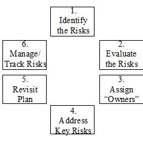
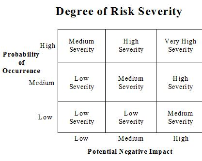

| Guideline: Performing a Risk Analysis |
 |
|
| Related Elements |
|---|
DescriptionThe Controller’s Division is not immune from the business pressures that are causing organizations to undertake numerous performance improvement projects. These projects may take a variety of forms: reengineering, systems enhancement, and reorganization, to name a few. In addition to these potential changes, the Controller’s Division frequently lends its expertise to other projects within the company through a variety of roles, such as providing financial analysis and participating on project teams. Unfortunately, in many companies, management is frequently disappointed with project results because these results often fall far below original expectations. Although the reasons for these failures vary, there is one common denominator: earlier in the life of the project, these reasons were risks to the project. Over the past few years, many organizations have concentrated on building the specialized skills and defined methods that are necessary to effectively manage projects. In their processes and procedures for project management, it is common for companies to carefully track and manage the issues that have begun to negatively impact the project. However, it is important that these processes and procedures be augmented by an effective process for identifying and addressing project risks before these risks become issues. Most of the issues that arise on projects could have been foreseen, and probably were anticipated by one or more people close to the project. Fully leveraging this early foresight offers the project team a variety of options. For example, priorities or schedules may be changed, key decisions may be escalated to higher levels of management, activities may be added or enhanced, and additional (or different) resources may be obtained. For these reasons, it is valuable to include an approach for managing project risks in the overall project management process.Project risk management is a method for addressing project risks in a proactive manner. In addition to reducing the overall risk of projects, project risk management benefits projects in other ways by:
This chapter describes a framework that companies can use to identify and manage project risks at the earliest possible stage in the life of a project. Project Risk CategoriesBefore beginning the process of managing project risk, it is important to understand the distinction between issues and risks:
In some instances, a risk is an issue that will happen in the future. However, not all project risks become issues. In addition to understanding the distinction between issues and risks, categorizing project risks can be valuable in assisting a project team to identify and consider the potential risks the project may face. Four categories of common project risks are project management risks, technical risks, human risks, and business risks.
These project risk categories and examples are not intended to be an exhaustive listing, but rather an illustration of the various types of risks that projects face. In implementing project risk management, it may be valuable for each company to develop categories, descriptions, and examples that are specifically applicable to itself and its project experiences. Project Risk Management ApproachProject risk management is an iterative process and should be directly tied into the process for managing and tracking issues throughout the life of the project. An effective approach for managing project risks involves several steps:
Project Risk Management Approach  Risk management is especially important during the initial stages of a project. However, it is appropriate to consider project risks at other times as well, such as:
If a project is underway and its risks have not been identified and evaluated, it is advisable to begin the risk management process without delay. Step 1: Identify the Relevant RisksWhen identifying risks, it is valuable to brainstorm and consider a wide variety of potential negative impacts to the project. The best approach to identifying risks depends on the size and importance of a project. In some cases, facilitated sessions are warranted. In other cases, it may be appropriate to seek input in writing. However, in all circumstances, it is beneficial to seek contribution from a variety of sources. Key contributors to this process may include project sponsors, project team members, and people with related expertise or experiences. In preparing to identify project risks, a few prerequisites are necessary:
After these prerequisites have been met, the first activity in the project risk management process is to develop a list of relevant project risks. Depending on the nature and size of the project, a variety of methods exist for developing this list, such as ad hoc requests or surveys. If the project warrants a facilitated session, it is helpful to collect a draft list of risks prior to holding the session. Once the essence of each risk has been identified, risk statements should be developed. Examples of risk statements for each category of risk are:
During this first step, it may be valuable to use the risk categories to prompt the contributors to consider additional areas. Also, it may be helpful to encourage contributors to review the inputs of others. However, it is important to note that the objective of this step is to create a list of relevant risks that should be tracked and managed. When the contributors believe that the list contains these relevant risks, it is time to move on to the next step in the process. Step 2: Evaluate the RisksThe second step involves evaluating the risks in preparation for taking appropriate actions. Depending on the nature of the project and the culture of the organization, this step may involve the entire project team or may be designated to specific sponsors and project team personnel only. There are several ways to evaluate the list of project risks. Some ways are:
The first step in evaluating project risks involves determining which risks warrant the most attention. This step involves analyzing each risk on two dimensions. The first dimension is the probability of that risk occurring. The second dimension is the potential for negative impact if the risk were to become an issue. These two dimensions can be plotted onto a matrix to determine the overall severity of each risk, as follows:

In identifying the appropriate manner in which to address the risks, another matrix may be valuable. This matrix
evaluates risk severity against the degree to which action may be taken: Containment Plans include actions that will be taken, and consequently need to be included in the overall project plan. Contingency Plans are preparations for actions to be taken in the event that a key nonactionable risk becomes an issue. The Tracking List is a mechanism to document the identified risks for monitoring and future consideration. The actions identified through the use of this matrix guide the actions to be taken in Step 4 of the project risk management approach. Step 3: Assign Risk OwnersBy this step in the risk management process, the key risks for the project are known and understood, so it is an opportunity to assign a person to “own” each key risk. This helps to ensure that the key risks are managed and tracked adequately. For very high and high severity risks, risk owners are necessary. Also, depending on the importance of the project, it may be valuable to assign owners to risks that are moderately severe. Risk owners are accountable for:
The risk owner may look to others for assistance with these activities, especially if it is deemed appropriate for one individual to own several risks. Step 4: Address Key RisksAt this point in the process, the actions appropriate for each risk begin. The Risk Management Actions matrix from Step 2 showed three types of actions for the project team to undertake: Containment Plans: These plans involve specific actions that will be taken to:
Containment Plans might include the following types of actions:
Contingency Plans: These plans involve preparation for actions to be taken in the event that a nonactionable risk becomes an issue. Contingency Plans might include the following types of actions:
Tracking List: This list is a mechanism to ensure that the identified project risks are retained and tracked as the project moves forward. Although no immediate action may be warranted, periodic review of the risks on the Tracking List will assist the project team in “keeping their eyes on the horizon.” The frequency of reviewing the list depends on the project, but it is valuable to specify the dates for these reviews in the project plan to ensure that they are not overlooked. Step 5: Revisit the Project PlanMany project plans are prepared before the project risk management process has begun. If this is the case, it is important to revisit the original project plan after the Containment and Contingency Plans have been prepared. A common problem that has been traced to many project failures stems from project plans that were unrealistic given the conditions. The information available at this point in the risk management process allows the original plan to be evaluated carefully for additional actions and trade-offs that will make the plan more achievable. Step 6: Manage and Track the RisksAs the project progresses, the risks that have been identified need to be:
It is best to include steps to review and oversee the project risk management activities in the project plan. The frequency of these steps depends on the nature of the project. Projects that represent major change for the organization (e.g., involve significant disruption to present processes or power bases within the organization, require cross-functional cooperation to a greater extent than normal) will benefit from fairly frequent and close review of the identified risks. ConclusionToday’s business environment is one where organizations are implementing a variety of projects. Unfortunately, many organizations are disappointed with their projects because the results often fall far below original expectations. However, it is possible to address project risks in a proactive manner and thereby reduce the overall riskiness of projects. The process for managing project risks involves several steps:
Effective project risk management will help to improve project plans, enhance understanding of project implications,
and allow for additional options and time to address risks in a well-planned manner. All of these benefits can be
achieved for projects of any size, scope, or difficulty, with the end result being the overall best utilization of the
organization’s resources. 5elected Reference“Risk Management Guide,” Managing the Implementation of the Total Project (MITP), 5th Edition, North Tarrytown, NY: International Business Machines, 1995. Controllership and the Work of the Managerial Accountant, John Wylie & Sons, 1996. |
| © Copyright IBM Corp. 1987, 2012 All Rights Reserved Property of IBM These materials are intended only for use as part of an IBM engagement |